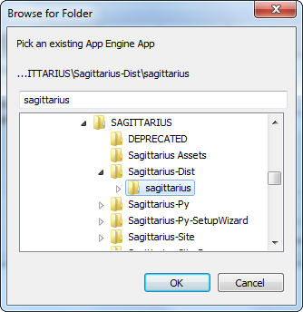

Use this guide to get up and running with Sagittarius
First, create a Google App Engine account by going to the App Engine homepage and clicking Sign Up. This will be linked to your Google account for all of Google’s services (such as Gmail and Google+), so if you do not already have a Google account you may need to create one as well. Wait until your App Engine account is verified before continuing.
Python: You will need Python 2.7 to deploy Sagittarius to Google App Engine. You can get the appropriate version for your OS at the Python 2.7 download page.
App Engine SDK: Download the appropriate Python version for your OS at the App Engine download page.
Log into App Engine and create a new application through the dashboard. You can name this application anything you like — it’s your application for your games, and Sagittarius will only be filling its shoes. Keep note of your app’s Application Identifier for later.
Visit the downloads page to get the recommended version of Sagittarius. Extract Sagittarius from its ZIP archive. You should see a directory structure much like the following:
Sagittarius-Dist/
├── sagittarius/
│ ├── css/
│ ├── img/
│ ├── js/
│ ├── app.yaml
│ ├── index.html
│ └── sagittarius.py
├── Sagittarius-Wizard/
└── README
Open up sagittarius/app.yaml in your favorite text editor. You should see the following:
application: [APP ID HERE]
version: 1
runtime: python27
api_version: 1
threadsafe: true
handlers:
- url: /favicon.ico
static_files: img/favicon.ico
upload: img/favicon.ico
- url: /img
static_dir: img
- url: /admin/.*
script: google.appengine.ext.admin.application
login: admin
- url: /.*
script: sagittarius.application
libraries:
- name: webapp2
version: latest
- name: jinja2
version: latest
builtins:
- remote_api: on
env_variables:
SAGITTARIUS_PASSWORD: [APP PASSWORD HERE]
You will need to replace [APP ID HERE] on line 1 with the previously-mentioned Application Identifier unique to your app.
You will also need to supply Sagittarius with a password by replacing [APP PASSWORD HERE] on line 35. Sagittarius uses this password to encrypt communication between clients and the server as well as secure uploaded files. The password can be any length (even an empty string) and any combination of characters. However, it is recommended that you choose an alphanumeric password between 10 and 30 characters long.
Once you are done making these changes, save and close app.yaml.
Launch the Google App Engine Launcher, which should have come with your App Engine SDK. In the main window you will see a list of available applications. To add Sagittarius to this list, go to File → Add Existing Application… and browse to the Sagittarius-Dist/sagittarius/ folder:

It is important that you select the folder itself, just as in the image above. You can choose whatever ports you would like for the Port and Admin Port fields; these are for localhost debug purposes and do not affect deployment.
Click Add and you should see your new application in the main list. Select it and click Deploy. The Launcher will open up a new window and prompt you for your Google account email and password. After supplying these, click OK and follow the rest of the deployment process. Congratulations, you have successfully deployed your app!
First, download a starter kit of your choice and integrate it into your project. How you do so will depend on the language you are using. The documentation accompanying each starter kit has some basic steps to follow if you are lost.
None yet.